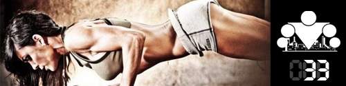

100 Дневный воркаут
<==== Вернуться к оглавлению
День 33. Почему боль в мышцах после тренировки не показатель?

Судя по комментариям пользователей, с болью в мышцах после тренировки познакомились все участники нашей программы "100 дневный воркаут". Рекомендую начать привыкать к этому чувству, потому что теперь оно станет вашим верным спутником по жизни. Ну а сегодняшний инфо-пост, я предлагаю посвятить обсуждению того, почему возникает боль в мышцах и что с ней делать? И хотя многие до сих пор считают, что именно эта боль, появляющаяся на следующий день является показателем того, что ты хорошо потренировался, но на самом деле это совсем не так.
Четыре вида мышечной боли
Первая, похожая на жжение, возникает непосредственно во время выполнения упражнения и нарастает по мере приближения к последним повторениям в подходе. Она связана с тем, что мышца, работая в бескислородном (анаэробном) режиме постепенно накапливает продукты энергообеспечения, используемые в этом режиме, т.н. лактат (молочную кислоту). (Более подробно про мышцы, их строение и энергообеспечение мы поговорим в ПРОДВИНУТОМ блоке)
Вторая, тупая, ломящая боль в мышцах, иногда доходящая до уровня боли при судорогах, возникает в том случае, если мышца испытывает значительные усилия, находясь в предельно укороченном состоянии. Попробуйте сильно сократить трицепс, максимально отводя руку назад и разгибая локоть, и вы почувствуете в нём такую боль. Дело в том, что при значительном сокращении мышц происходит сдавливание нервных окончаний, находящихся между ними. Это может привести к еще большему рефлекторному сокращению мышечных волокон, и, соответственно, их судорожному сокращению с еще большей болью.
Третья, боль возникающая при растяжении. Обычно она возникает не в самих мышцах, а в их сухожилиях при сильном внешнем (со стороны нагрузки) растягивающем усилии, которое регистрируются специальными рецепторами (датчиками) растяжения – проприорецепторами.
Четвертая, возникает на следующий день или через день после тренировки. Она связана с возникновением микро-разрывов в мышцах, которые были получены в ходе выполнения упражнений, к которым организм был не готов. Именно эти микро-разрывы и болят. В свою очередь они служат сигналом для организма для активизации своих защитных сил и запуска процесса восстановления.
Мышечная боль и результаты
Несмотря на то, что долгое время считалось (а в интернете до сих пор считается), что именно боль в мышцах на следующий день после тренировки является признаком того, что они растут, последние научные исследования в данной области показывают, что между микроразрывами мышц и ростом мышечной ткани нет никакой связи.
Причина по которым возникает боль связана с тем, что волокна, из которых состоят мышцы, изначально неодинаковы по длине и не всегда растут параллельно друг другу. При тренировках короткие и неправильно сросшиеся волокна разрываются (это и есть те самые микро-разрывы), что приводит к воспалительным процессам в мышцах, следствием которых и является мышечная боль. С течением времени и тренировок все эти волокна (называемые миофибриллами) приходят в единообразие, становятся одинаковой длины и строго параллельны друг другу.
Но мышечный рост при этом не прекращается. Почему? Потому что рост мышц связан с ДРУГИМИ факторами:
- Наличием анаболических гормонов (правильно выбранная нагрузка на тренировках) - Наличием аминокислот в крови (правильное питание) - Наличием ионов водорода и свободного креатина (правильно выбранный режим тренировок)
Мы ещё вернёмся и подробно рассмотрим этот вопрос в ПРОДВИНУТОМ блоке.
Заключение
В принципе, послетренировочная мышечная боль относительно безопасна и проходит сама спустя некоторое время, хотя, конечно, болевые ощущения могут усиливаться при попытке задействовать мышцы или при их пальпации.
======> День 34. Почему люди бросают заниматься спортом?